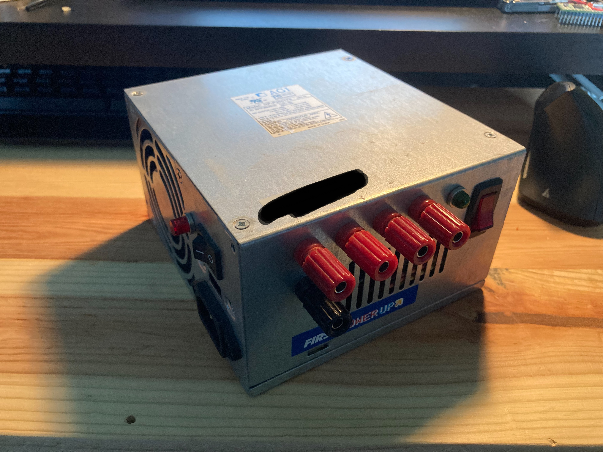
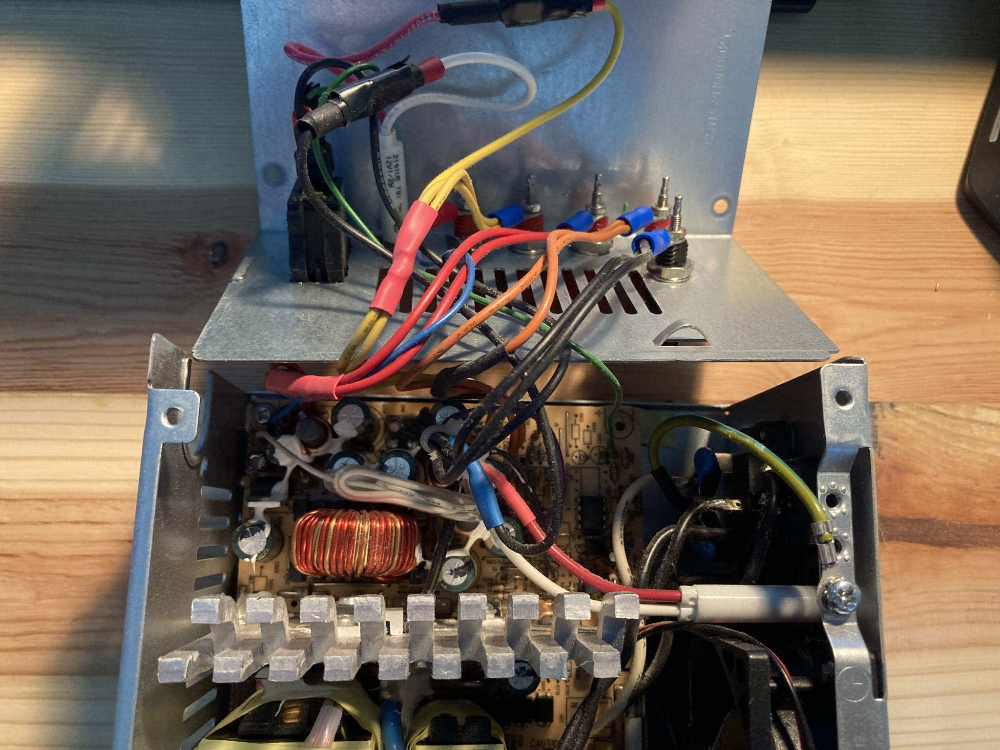
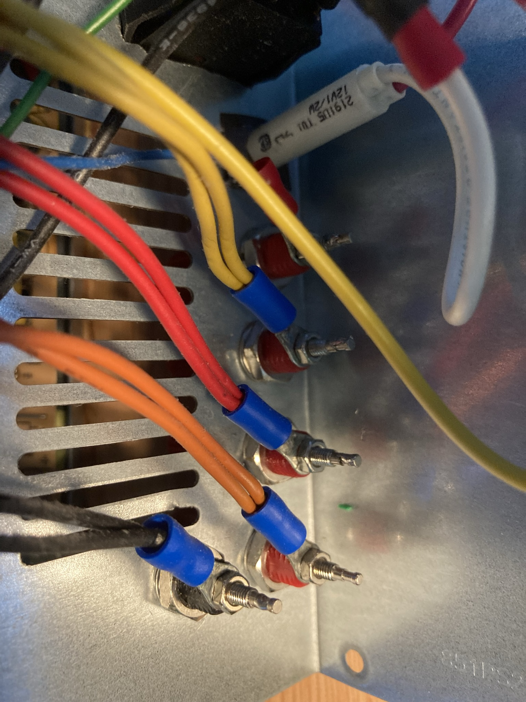

Nolan Adams
|  |  |
|  |
The ATX power supply to bench power supply conversion is a very popular beginner electronics project. It involves modifying a stock ATX power supply from an old computer to be usable as a bench power supply for further electronics work. The result of this project was the power supply that I used all the way from 2016 to early 2020, when I upgraded to a much better power supply, the RIDEN RD6006.
The first time I built one of these, it was with the help of my grandfather. The included pictures are the second iteration of this project, after the first one broke down due being based on a very low-quality power supply.